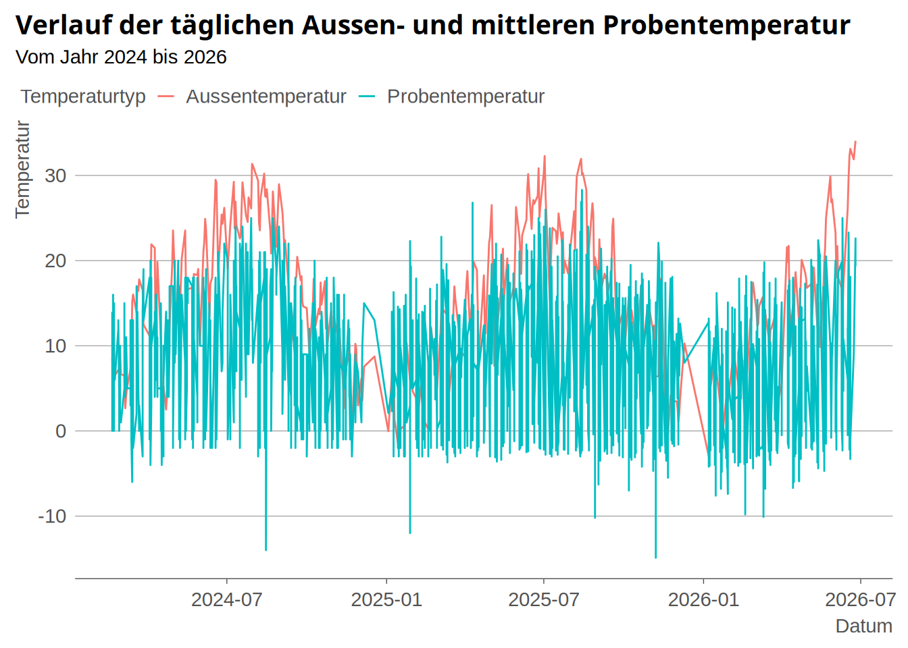
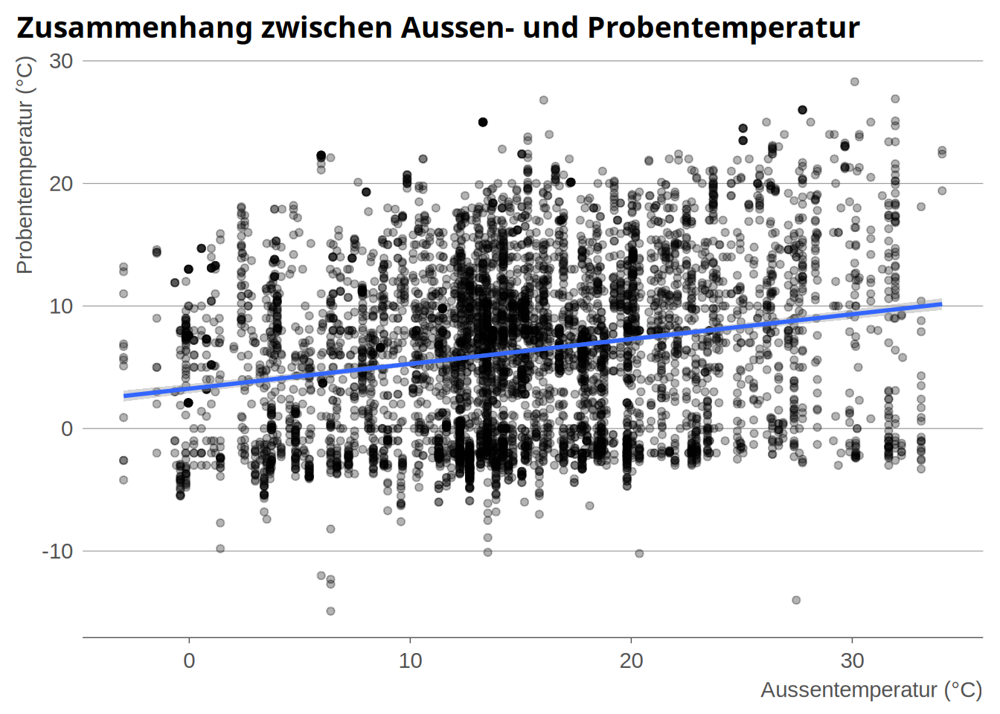
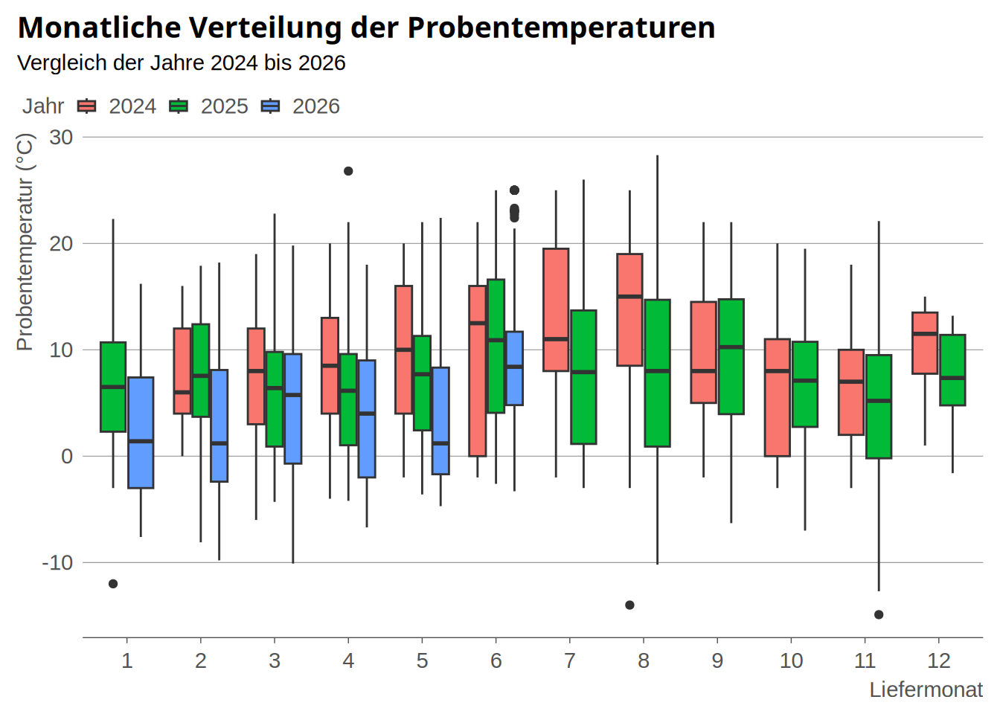
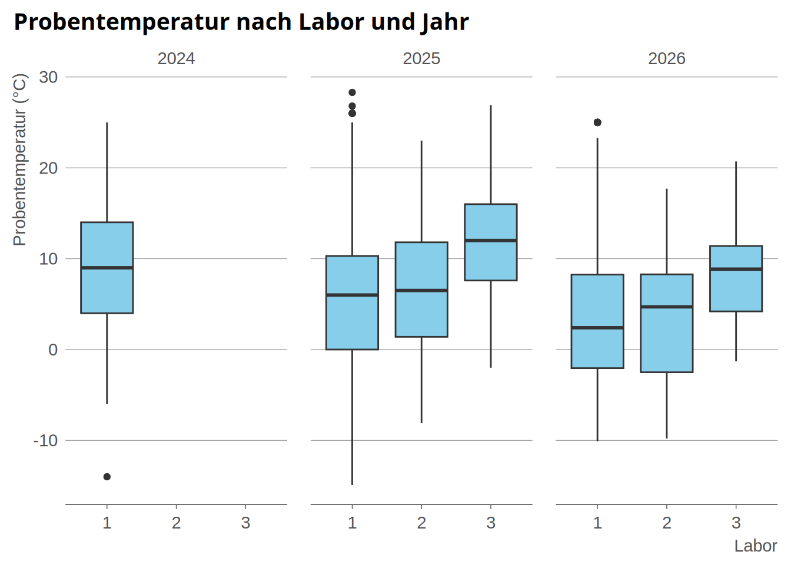

library(tidyverse)
library(ggthemes)
library(dplyr)
library(lubridate)
library(knitr)
library(statR)index.qmd
Einleitung
Dieses Projekt entsteht im Rahmen vom rstatsZH Kurs 012.
Im Labor wird beim Eingang von Proben routinemässig die Eingangstemperatur erfasst. Die Proben werden in der Regel in isolierten Versandboxen mit Tiefkühlelementen transportiert, um während des Versands geeignete Temperaturbedingungen sicherzustellen. Im Rahmen dieses Projekts werden die erfassten Temperaturdaten ausgewertet und analysiert.
Daten
Laden der Daten
Temp2024 <- read.csv2(here::here("daten/raw/TemperaturProbenankunft2024.csv"))
Temp2025 <- read.csv2(here::here("daten/raw/TemperaturProbenankunft2025.csv"))
Temp2026 <- read.csv2(here::here("daten/raw/TemperaturProbenankunft2026.csv"))
Datum2025 <- read.csv2(here::here("daten/raw/EingangsdatumProben2025.csv"))
Meteo2024 <- read.csv(here::here("daten/raw/ugz_ogd_meteo_d1_2024.csv"))
Meteo2025 <- read.csv(here::here("daten/raw/ugz_ogd_meteo_d1_2025.csv"))
Meteo2026 <- read.csv(here::here("daten/raw/ugz_ogd_meteo_d1_2026.csv"))Herkunft der Meteo Daten:
https://data.stadt-zuerich.ch/dataset/ugz_meteodaten_tagesmittelwerte
Herkunft der Temperaturdaten
Die Temperaturdaten wurden aus dem Datenbestand des Kantonalen Labors Zürich exportiert. Vor der Auswertung wurden die Daten entsprechend aufbereitet und anonymisiert. Der Datensatz enthält ausschliesslich die gemessenen Eingangstemperaturen, das Eingangsdatum, die Probennummer sowie das Labor, welches die jeweiligen Proben erhalten hat. Die Laborangaben wurden dabei durch numerische Kennzeichnungen anonymisiert.
Analyseziele
Fragestellungen
Hat die Aussentemperatur einen Einfluss auf die Eingangstemperatur der Proben bei der Ankunft im Labor?
Lassen sich Unterschiede oder Trends in den Eingangstemperaturen zwischen den verschiedenen Laboren erkennen?
Daten Aufbereitung
Datenbereinigun für das Jahr 2024
Temp2024_kor <- Temp2024 |>
rename(Probennummer = Probe.Nr,
Temperatur = Temperatur.Fleisch) |>
mutate(
Datum = sub(" abend 16:45", "", Datum),
Datum = dmy(Datum),
Liefermonat = month(Datum),
Labor = 1,
Temperatur = as.numeric(Temperatur)) |>
relocate(Liefermonat, .after = Temperatur) |>
relocate(Datum, .after = Liefermonat)Datenbereinigung für das Jahr 2025
Temp_2025 <- Temp2025 |>
rename(Probennummer = Pro2.Nr,
Temperatur = Temperatur.Fleisch)Temp2025_datum <- left_join(Temp_2025, Datum2025, by = "Probennummer")
Temp2025_datumkor <- Temp2025_datum |>
mutate(
Datum = na_if(Datum, ""),
ProbeEingangsdatum = na_if(ProbeEingangsdatum, ""),
Datum = coalesce(Datum, ProbeEingangsdatum),
Temperatur = as.numeric(Temperatur)) |>
select(-ProbeEingangsdatum)
Temp2025_kor <- Temp2025_datumkor |>
mutate(
Datum = dmy(Datum),
Monat = month(Datum),
Liefermonat = coalesce(Liefermonat, Monat)) |>
select(-Monat)Datenbereinigung für das Jahr 2026
Temp2026_kor <- Temp2026 |>
rename(Probennummer = Pro2nummer) |>
mutate(
Datum = dmy(Datum),
Liefermonat = month(Datum),
Temperatur = as.numeric(Temperatur)) |>
relocate(Liefermonat, .after = Temperatur) |>
relocate(Datum, .after = Liefermonat)Daten Meteo bereiningen für das Jahr 2024
Meteo2024_kor <- Meteo2024 |>
filter(Standort == "Zch_Heubeeribüel",
Parameter == "T_max_h1")Daten Meteo bereiningen für das Jahr 2025
Meteo2025_kor <- Meteo2025 |>
filter(Standort == "Zch_Heubeeribüel",
Parameter == "T_max_h1")Daten Meteo bereiningen für das Jahr 2026
Meteo2026_kor <- Meteo2026 |>
filter(Standort == "Zch_Heubeeribüel",
Parameter == "T_max_h1")Temperaturdaten aller Jahre zusammenfügen
Temp2024bis2026 <- bind_rows(Temp2024_kor, Temp2025_kor, Temp2026_kor)Daten Meteo zusammenfügen
Meteo2024bis2026 <- bind_rows(Meteo2024_kor, Meteo2025_kor, Meteo2026_kor)Meteo-Temperaturtabelle erstellen
Meteo2024bis2026_Saison <- Meteo2024bis2026 |>
mutate(
Jahr = year(Datum),
Monatmeteo = month(Datum),
Saison = case_when(
Monatmeteo %in% c(12, 1, 2) ~ "Winter",
Monatmeteo %in% c(3, 4, 5) ~ "Frühling",
Monatmeteo %in% c(6, 7, 8) ~ "Sommer",
Monatmeteo %in% c(9, 10, 11) ~ "Herbst"),
Datum = as.Date(Datum))
Meteo2024bis2026_Statistik <- Meteo2024bis2026_Saison |>
group_by(Jahr) |>
summarise(
Min_Temp = min(Wert, na.rm = TRUE),
Max_Temp = max(Wert, na.rm = TRUE),
Mittel_Temp = mean(Wert, na.rm = TRUE),
Frühling = mean(Wert[Saison == "Frühling"]),
Sommer = mean(Wert[Saison == "Sommer"]),
Herbst = mean(Wert[Saison == "Herbst"]),
Winter = mean(Wert[Saison == "Winter"]))
kable(Meteo2024bis2026_Statistik,
digits = 1,
caption = "Jahres- und saisonale Temperaturstatistik 2024-2026")| Jahr | Min_Temp | Max_Temp | Mittel_Temp | Frühling | Sommer | Herbst | Winter |
|---|---|---|---|---|---|---|---|
| 2024 | -3.6 | 31.4 | 14.3 | 14.5 | 24.0 | 13.1 | 5.6 |
| 2025 | -2.4 | 32.3 | 14.1 | 14.8 | 24.2 | 12.8 | 4.3 |
| 2026 | -5.3 | 35.5 | 14.1 | 15.8 | 26.4 | NaN | 4.9 |
Die Tabelle 1 zeigt, dass die mittlere Jahrestemperatur im Zeitraum 2024–2026 mit etwa 14,1–14,3 °C nahezu konstant blieb. Die höchste Maximaltemperatur wurde 2026 mit 35,5 °C gemessen, während die niedrigste Minimaltemperatur ebenfalls 2026 mit -5,3 °C auftrat. Die Sommer waren durchgehend die wärmste Jahreszeit, wobei 2026 mit durchschnittlich 26,4 °C den höchsten Sommermittelwert erreichte
Daten Meteo und Temperaturdaten zusammenfügen
Daten_gesammt <- Temp2024bis2026 |>
left_join(Meteo2024bis2026_Saison, by = "Datum") |>
rename(Aussentemperatur = Wert,
Monat_in_Zahl = Monatmeteo,
Probentemperatur = Temperatur,
Jahr = Jahr.x) |>
select(-Parameter, -Intervall, -Standort, -Status, -Einheit, -Jahr.y, -Monat_in_Zahl)Daten Speichern im processed Ordner
write.csv(x = Daten_gesammt,
here::here("daten/processed/Daten_gesammt.csv"))Daten Visualisierung
Daten in ein Langes Format verwandeln
Daten_gesammt_long <- Daten_gesammt |>
pivot_longer(
cols = c(Probentemperatur, Aussentemperatur),
names_to = "Temperaturtyp",
values_to = "Temperatur")Verlauf der täglichen Aussen- und mittleren Probentemperatur
ggplot(data = Daten_gesammt_long, mapping = aes(
x= Datum,
y = Temperatur,
color = Temperaturtyp)) +
geom_line() +
labs(
title = "Verlauf der täglichen Aussen- und mittleren Probentemperatur",
subtitle = "Vom Jahr 2024 bis 2026"
) +
theme_stat()
Da die dargestellte Abbildung 1 aufgrund mehrerer Probentemperaturmessungen an einzelnen Tagen unübersichtlich ist, werden im nächsten Schritt die Probentemperaturen pro Tag gemittelt. Anschliessend wird der Plot mit den berechneten Tagesmittelwerten erneut erstellt, um den Temperaturverlauf übersichtlicher darzustellen.
Daten_gesammt_TempproTag <- Daten_gesammt |>
group_by(Datum) |>
summarise(
Probentemperatur_mean = round(mean(Probentemperatur, na.rm = TRUE), 1),
Aussentemperatur = first(Aussentemperatur)) Daten_gesammt_TempproTag_long <- Daten_gesammt_TempproTag |>
pivot_longer(
cols = c(Probentemperatur_mean, Aussentemperatur),
names_to = "Temperaturtyp",
values_to = "Temperatur")ggplot(data = Daten_gesammt_TempproTag_long, mapping = aes(
x= Datum,
y = Temperatur,
color = Temperaturtyp)) +
geom_line() +
scale_x_date(
date_breaks = "3 months",
date_labels = "%b %Y") +
labs(
title = "Verlauf der täglichen Aussen- und mittleren Probentemperatur",
subtitle = "Vom Jahr 2024 bis 2026",
x = "Probenankunft",
y = "Temperatur (°C)"
) +
theme_stat()+
theme(
axis.text.x = element_text(angle = 45, hjust = 1))
Die rote Linie steigt im Sommer auf über 30 °C und sinkt im Winter bis unter 0 °C. Das bestätigt, dass die Wetterdaten plausibel sind. Die türkise Linie steigt im Sommer ebenfalls etwas an, bleibt aber deutlich stabiler als die Aussentemperatur. Das spricht dafür, das die isolierten Versandboxen und die Kühlakkus einen kühlenden Effekt haben
Auffällig sind einzelne kurzfristige Spitzen und Einbrüche in beiden Messreihen. Diese können durch kurzfristige Wetterereignisse, Messbedingungen oder einzelne Ausreisser in den Daten verursacht sein. Insgesamt ist jedoch ein klarer Zusammenhang zwischen Aussen- und Probentemperatur erkennbar: Steigende Aussentemperaturen führen zeitversetzt zu höheren Probentemperaturen, während sinkende Aussentemperaturen ebenfalls eine Abkühlung der Probe bewirken.
Die hohe tägliche Variabilität erschwert die Erkennung langfristiger Trends, jedoch zeigt der Zeitraum von 2024 bis 2026 keinen eindeutigen kontinuierlichen Anstieg oder Rückgang der Temperaturen. Der dominierende Einflussfaktor ist der saisonale Jahresverlauf mit wiederkehrenden Sommer- und Winterperioden.
Zusammenhang zwischen Aussen- und Probentemperatur
ggplot(data = Daten_gesammt, mapping = aes(
x = Aussentemperatur,
y = Probentemperatur)) +
geom_point(alpha = 0.3) +
geom_smooth(method = "lm", se = TRUE) +
labs(
title = "Zusammenhang zwischen Aussen- und Probentemperatur",
x = "Aussentemperatur (°C)",
y = "Probentemperatur (°C)") +
theme_stat()
Auf diesem Plot erkennt man, dass je höher die Aussentemperatur ist, desto höher ist im Durchschnitt die Probentemperatur.
Dies erkennt man daran, dass die Punkte sehr breit umd die blaue Linie verstreut sind, Das bedeutet, das die Aussentemperatur nur einen kleinen Teil der Unterschiede erklärt. Denn es gibt noch weitere Faktoren, die man ebenfalls beachten muss wie zum Beispiel, die Anzahl der Kühlakkus, die Transportdauer oder die Art der Probe.
Monatliche Verteilung der Probentemperaturen
Daten_gesammt_ohneNA <- Daten_gesammt|>
filter(!is.na(Probentemperatur),
!is.na(Liefermonat))
ggplot(data = Daten_gesammt_ohneNA, mapping = aes(
x = factor(Liefermonat),
y = Probentemperatur,
fill = factor(Jahr))) +
geom_boxplot() +
labs(
title = "Monatliche Verteilung der Probentemperaturen",
subtitle = "Vergleich der Jahre 2024 bis 2026",
x = "Liefermonat",
y = "Probentemperatur (°C)",
fill = "Jahr"
) +
theme_stat()
Die grafische Auswertung zeigt eine Tendenz zu niedrigeren Probentemperaturen in den Jahren 2025 und 2026 im Vergleich zu 2024. Diese Entwicklung ist plausibel, da Anfang 2025 Massnahmen zur Verbesserung der Kühlung und des Probentransports eingeführt wurden. Die beobachtete Tendenz steht somit im Einklang mit der erwarteten Wirkung dieser Massnahmen.
Verteilung der Probentemperatur nach Labor
ggplot(data = Daten_gesammt_ohneNA, mapping = aes(
x = as.factor(Labor),
y = Probentemperatur)) +
geom_boxplot(fill = "skyblue") +
labs(
title = "Verteilung der Probentemperatur nach Labor",
x = "Labor",
y = "Probentemperatur (°C)") +
theme_stat()
Die Verteilung der Probentemperaturen unterscheidet sich zwischen den Laboren. Während Labor 1 und Labor 2 vergleichbare Medianwerte aufweisen, zeigt Labor 3 insgesamt höhere Eingangstemperaturen. Zudem weist Labor 1 eine größere Variabilität sowie mehrere hohe Ausreißer auf.
Verteilung der Probentemperatur nach Labor und Jahr
ggplot(data = Daten_gesammt_ohneNA, mapping = aes(
x = as.factor(Labor),
y = Probentemperatur,
fill = as.factor(Jahr))) +
geom_boxplot(fill = "skyblue") +
facet_wrap(~Jahr) +
labs(
title = "Probentemperatur nach Labor und Jahr",
x = "Labor",
y = " Probentemperatur (°C)",
fill = "Jahr") +
theme_stat()Ignoring unknown labels:
• fill : "Jahr"
Die Boxplots zeigen die Verteilung der Probentemperaturen in den drei Laboren über die Jahre 2024 bis 2026. Im Jahr 2024 liegen nur Daten für Labor 1 vor. Ab 2025 sind alle drei Labore vertreten, wodurch ein direkter Vergleich möglich wird. Dabei weist Labor 3 in beiden Jahren die höchsten Probentemperaturen auf, während die Medianwerte von Labor 1 und 2 tiefer liegen. Labor 1 zeigt zudem die grösste Streuung der Messwerte sowie mehrere hohe Ausreisser, insbesondere im Jahr 2025. Insgesamt bleibt das Muster über die Jahre weitgehend konstant: Labor 3 verzeichnet die höchsten Temperaturen, Labor 1 die grösste Variabilität und Labor 2 liegt hinsichtlich der Temperaturverteilung zwischen den beiden anderen Laboren. Die beobachteten Unterschiede können auf verschiedene Probenarten, Transportbedingungen oder unterschiedliche Abläufe in den Laboren zurückzuführen sein.